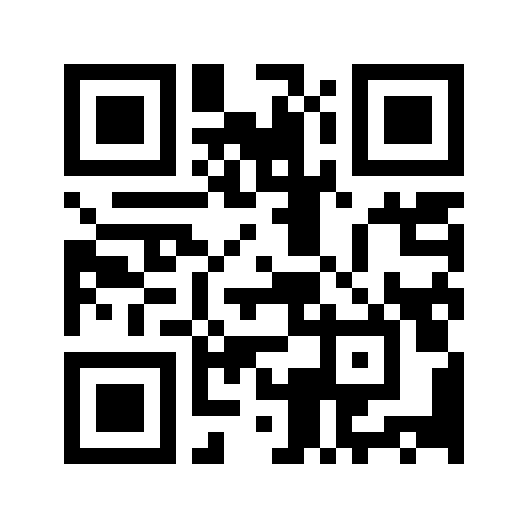

<!doctype html><html lang="id"><meta charset="utf-8"><meta name="viewport" content="width=device-width,initial-scale=1"><title>QR Website Re'rasa' Musik Corner</title><style>body{margin:0;background:#242d49;color:#f1e8c9;font:18px/1.7 system-ui;text-align:center}main{max-width:660px;margin:auto;padding:40px 20px}h1{font:44px Georgia}img{display:block;width:min(100%,420px);margin:28px auto;background:white}a{color:inherit}nav{display:flex;justify-content:center;gap:18px;flex-wrap:wrap}button{font:inherit;padding:12px 20px;border:0;border-radius:8px;background:#f1e8c9;color:#242d49;cursor:pointer}@media print{body{background:white;color:black}nav{display:none}main{padding:15mm}img{width:100mm}}</style><main><p>SULAWESI SELATAN / 2026</p><h1>Re'rasa' Musik Corner</h1><p>Jalan menuju ruang bunyi.</p><p><a href="https://rerasa.web.id">https://rerasa.web.id</a></p><nav><button id="downloadMainJpg">Unduh label JPG</button><a href="public/qr-rerasa.png" download="QR-WEBSITE-RERASA.png">Unduh QR PNG</a><a href="public/qr-rerasa.svg" download="QR-WEBSITE-RERASA.svg">Unduh QR SVG</a><button onclick="print()">Cetak / Simpan PDF</button><a href="index.html">Buka pameran</a></nav></main></html>

<script src="assets/qrcode.js"></script><script src="qr-labels.js"></script><script>document.getElementById("downloadMainJpg").onclick=()=>RerasaQRLabel.download({id:"website-utama",name:"Gerbang Utama",url:"https://rerasa.web.id"});</script>
